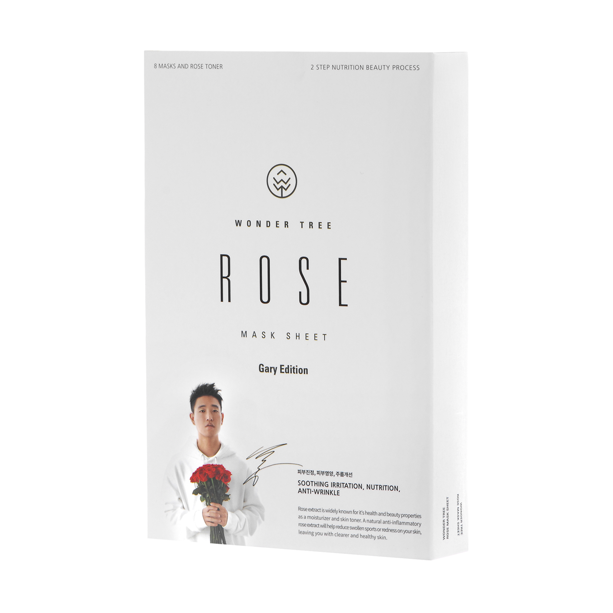
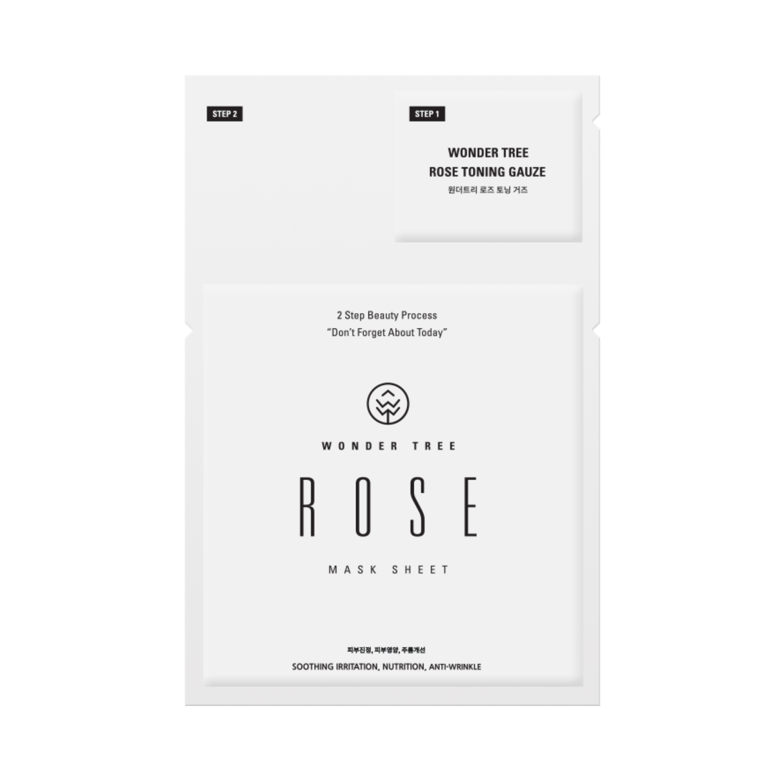
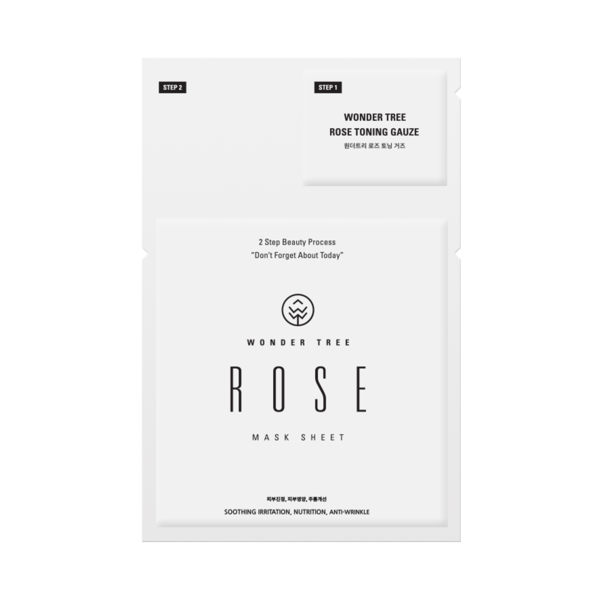
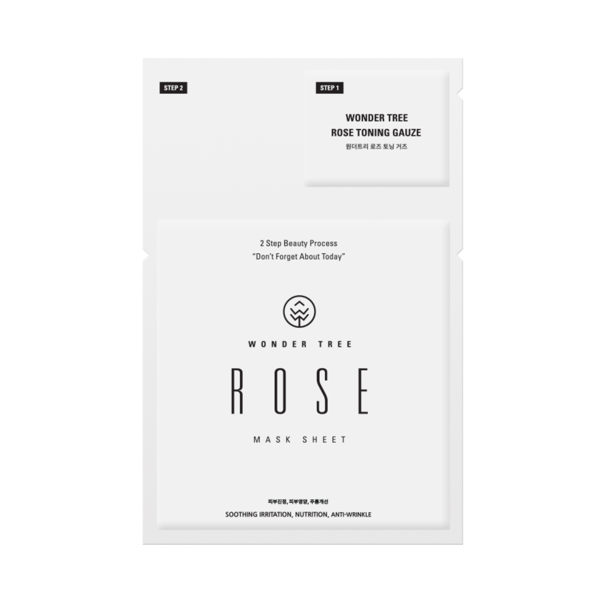
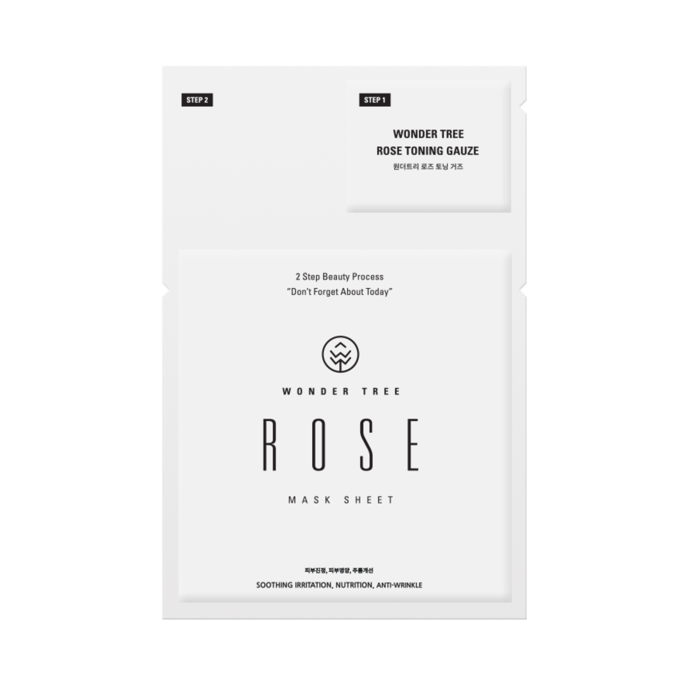

<


 
>

>

>
{{product.price}}

>
{{product.price}}
Rose extract has excellent skin soothing and cleansing properties. Our skin is exhausted daily by the stressful and harmful environment. The rose mask will provide softness and resilience for your skin, hydrating your skin with nutrition. Washing off after the process is not necessary. Its concentrated extract and essence are rapidly absorbed into your skin, leaving you a stable and comfortable after effect.
Our mask sheets are made of 100% natural materials
8 MASKS AND ROSE TONER
2 STEP NUTRITION BEAUTY PROCESS
Rose extract is widely known for it’s health and beauty properties as a moisturizer and skin toner. Rose extract, a natural anti-inflammatory, will help reduce swollen spots or redness on your skin, leaving you with clearer and healthier skin.
STEP 1
After cleansing, smooth the rose toner gently over your face.
STEP 2
Apply Rose mask sheet to face for 20 – 30 minutes to be fully absorbed into the skin.
Wonder Tree mask sheets are made of 100% natural materials